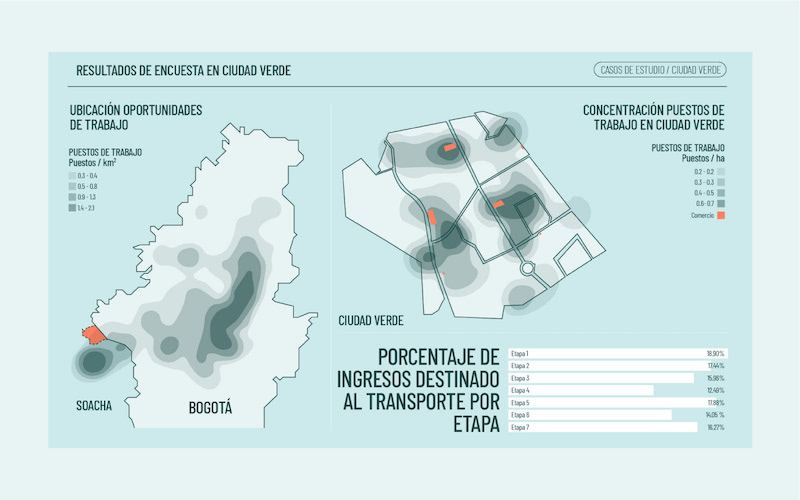
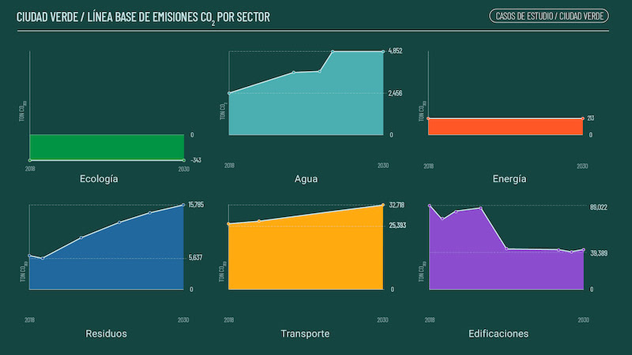
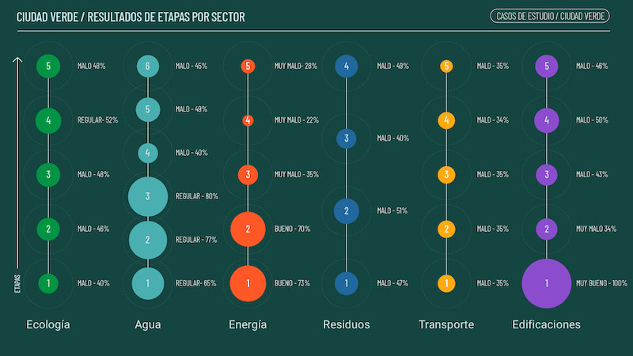
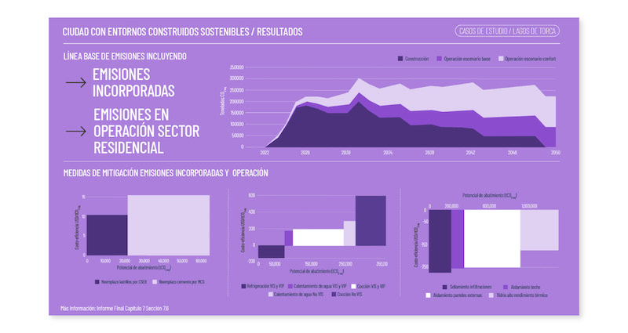

Infographics design and data visualization for the project: "Low Carbon Cities in Colombia, an urban modeling approach for Public Policy Analysis" which provided technical criteria, tools, and recommendations for sustainable urban development in Colombia.
Role: Data Visualization, Graphic Design



